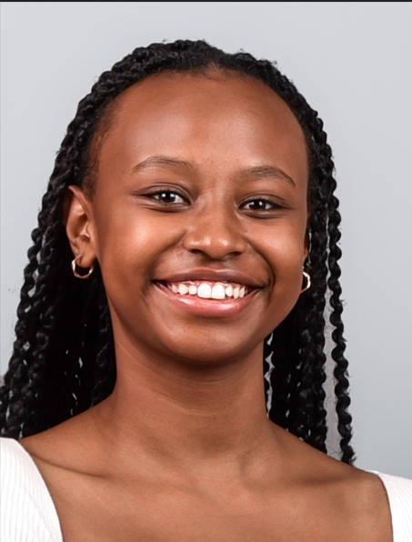
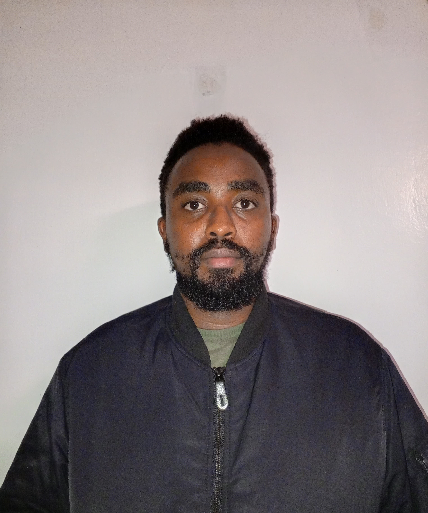
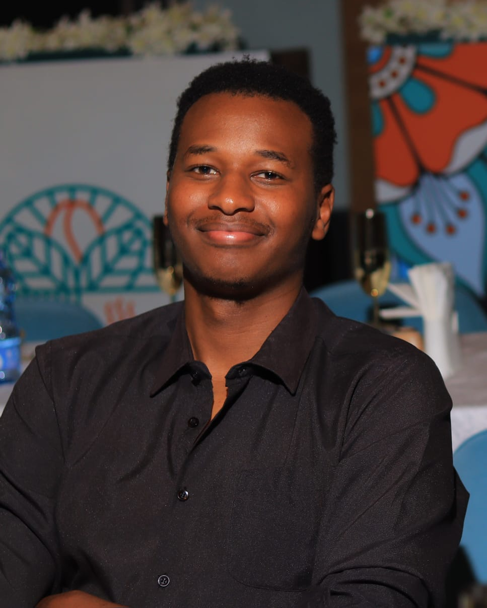
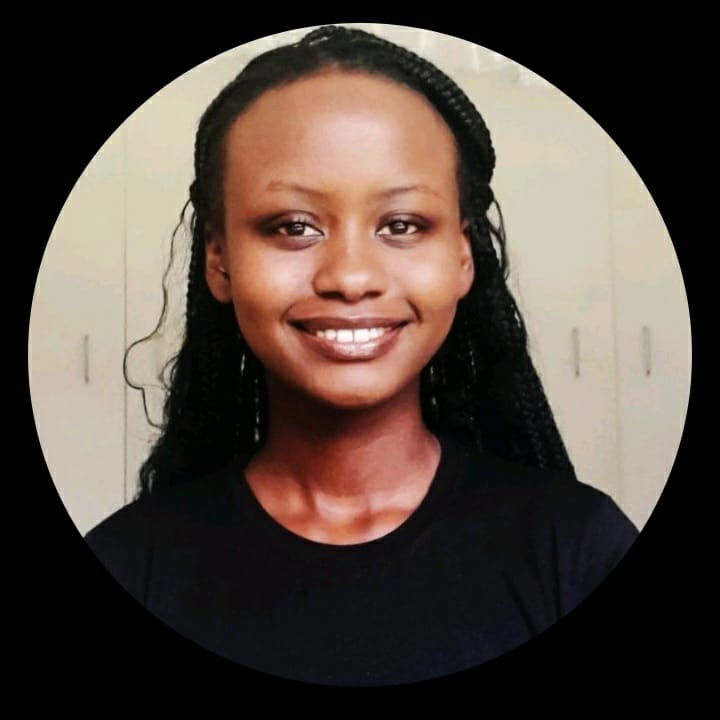

Trash Mtaani is a bold, youth-driven initiative committed to transforming Kenya’s waste crisis into a force for economic and environmental change. Born out of Nairobi’s informal settlements, where unemployment and pollution collide, our project empowers communities to view waste not as a burden but as a resource. Through a pioneering digital points system, residents are rewarded for sorting and delivering waste, earning redeemable credits for essential goods like food and household supplies. This approach not only addresses immediate needs but fosters a culture of sustainability, dignity, and collective responsibility. By creating jobs for youth, supporting local businesses, and promoting environmental stewardship, Trash Mtaani is reimagining the future of urban waste—one community at a time.
How It Works
1. Sort Waste: Community members sort household waste into plastics, organics, and metals.
2. Drop-Off: Sorted waste is taken to staffed Trash Mtaani collection hubs.
3. Earn Points: Waste is weighed and participants earn digital points through our system.
4. Redeem: Points can be exchanged for food items like maize flour, rice, or cooking oil.
5. Process Waste: Plastics are sent to recyclers, and organic waste is converted into compost and fertilizer.
Our Impact
üåç Environmental Cleanup: Trash Mtaani has significantly reduced illegal dumping and promoted clean, safe neighborhoods in underserved areas.
üë∑ Youth Employment: We create dignified jobs for local youth as waste collectors, sorters, digital system operators, and community educators.
üë™ Community Empowerment: Families gain access to essential products by simply participating in responsible waste disposal.
♻️ Sustainable Waste Use: Our model ensures that collected waste is properly recycled or transformed into environmentally friendly products.
Meet the Team
Eve Wanjiku
Founder & CEO
Driven by a commitment to impactful leadership, I bring 10 years of progressive experience, with 7 years successfully building and guiding high-achieving teams. My BSc in Biochemistry from Nairobi University and MBA in Global, Sustainable & Social Enterprise from United States International University provide a robust framework, enabling me to combine analytical insight with a strong drive to deliver sustainable solutions and make meaningful societal contributions

Dawn Damaris
Project Manager
Project Manager with a background in Project Management and a passion for inclusive development. Experienced in coordinating community-based initiatives, partner engagement, and programme logistics across health, gender, and governance sectors. Driven by values of collaboration, accountability, and purpose-led growth.

Joseph Kihonge
Head of Operations
With a strong foundation in Information Technology and a passion for community empowerment, I bring experience working in various IT roles at the Kenya Revenue Authority (KRA), Sidian bank, Tausi Assurance Agency and Parklands Baptist Church. During my time at this organizations I was actively involved in key areas such as systems administration, cybersecurity, data management, and IT project coordination—equipping me with both technical expertise and strategic thinking.
Beyond my professional career, I am deeply committed to giving back to society. I believe in using technology not just as a tool for efficiency, but as a bridge to create opportunity and inclusion. This alignment of purpose and skill makes me well-positioned to lead IT strategy for a growing non-profit organization, ensuring that its technology infrastructure is secure, scalable, and impactful for the communities it serves.
Dennis Nyaga
Chief Finance Officer
Dennis is a seasoned financial professional with a BSc in Finance- Investment Management and at the advanced Level CIFA certification. He is also pursuing his MBA in Finance. His career journey has spanned various facets of the financial industry, including a significant tenure in the banking sector.
Key Highlights
He has a strong background in portfolio management, honed through his experience as a financial research analyst and a negotiator. This expertise has allowed him to excel as an investment banker and dealer, where he has been responsible for managing complex financial transactions. In addition, he serves as a director at KD Gaming, citing his entrepreneurial spirit.
Karen Ndabari
Marketing Head
I'm a results-driven Marketing and Graphic Designer with a passion for blending creativity and strategy to build memorable brand experiences. With a background in digital marketing and visual communication, I specialize in crafting compelling content, impactful campaigns, and eye-catching designs that connect with audiences and drive engagement. From social media graphics to full-scale branding projects, I bring both artistic vision and analytical thinking to every project I take on. Whether working solo or collaborating with a team, I’m committed to delivering designs that don’t just look good — they get results.

Collins Njunia
Structural Engineering Head
As a Civil and Structural Engineering graduand, I possess strong hands-on experience in construction project monitoring, material quality inspection, and structural design. My background includes preparing as-built drawings and performing structural analyses using industry-standard software. These skills are directly applicable to the development and implementation of infrastructure for sustainable solutions, such as the construction of waste collection stations.I am also proficient in GIS mapping with QGIS, having digitized extensive road networks and prepared technical documentation and visual maps for a national roads board. This expertise enables effective data management and visualization crucial for sustainable resource tracking and urban planning. Furthermore, my experience in digital banking and customer support highlights my ability to contribute to technology-driven community initiatives aimed at economic empowerment through sustainable development solutions. My complex problem-solving, adaptability, and communication skills further strengthen my capacity to contribute to impactful projects focused on environmental and community upliftment.
Sheila Nkatha
Human Resource Manager
I am a dedicated Resource Mobilisation Officer with a strong background in program management and community development. I bring a wealth of experience in designing and implementing donor engagement strategies, grant writing, and building strategic partnerships. My expertise lies in aligning fundraising efforts with organizational goals to support impactful and sustainable programs. Passionate about creating positive change, I am committed to empowering communities through innovative and results-driven resource mobilisation.

Precious Mwangi
Chief Technical Officer
As the Chief Technical Officer at Trash Mtaani, I lead the development and integration of technology solutions that drive the project's efficiency, scalability, and impact. My work focuses on streamlining data collection, optimizing internal systems, and leveraging digital tools to enhance community engagement and environmental accountability. With a strong foundation in tech and a passion for sustainable innovation, I ensure that our technical infrastructure aligns with our mission to create cleaner, smarter neighborhoods. I am committed to harnessing the power of technology to transform waste management into a dynamic, data-informed, and community-driven solution.